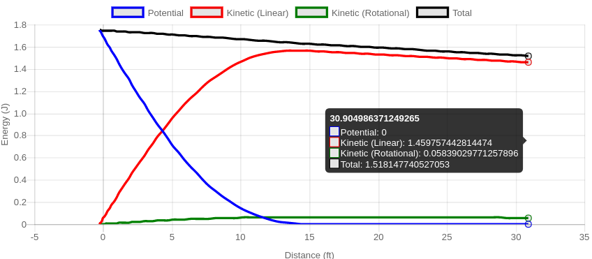
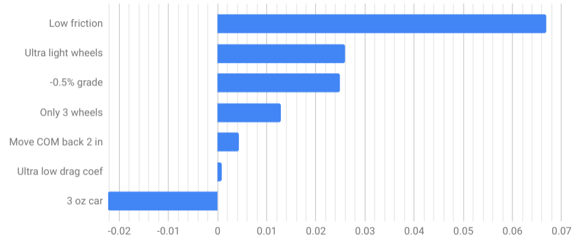

This is a sample result from the Pinewood Derby Simulator:

The time listed above is how long it takes the car to get to the finish line. The graph shows the kinetic and potential energies of the car at each point on the track. The x-axis, distance, is the horizontal distance from the starting gate in feet. The y-axis is energy in joules. Blue is potential energy, red is kinetic energy, and green is rotation energy (of the wheels). The black line is the sum of all three energies.
At the very beginning of the race, all of the car's energy is in the form of potential energy, and none in kinetic energy, because the car is not moving. As the car moves down the slope, the potential energy is converted to kinetic energy. By the time the car has leveled out, all of the energy is in the form of kinetic energy, and the potential energy is zero. The total energy drops over time due to friction. In a friction-less world—and you can do that with this simulator—the total energy is constant throughout.
Using the simulator, you can add a grade or slope to the floor. If you do this, the potential energy might not be zero at the bottom of the track. It might even be negative. This is perfectly fine, as potential energy is relative anyway, and you can designate any elevation you want as "zero" potential energy, and all of the physics will work out the same. It's just more convenient and instructive here to set the floor as zero. (Interestingly, in orbital mechanics, it is most convenient to set a point infinitely far away from a planet as "zero" potential energy, which means all other locations have negative potential energy. If the sum of a spacecraft's kinetic and potential energy becomes positive, we say it has "escape velocity" and will escape completely out of orbit.)
Some of the energy is stored as rotational energy. This can be considered "wasted" energy when it comes to having a fast car, since it means there is less kinetic energy in the form of forward motion. Using the simulator, you can set the mass of the wheels to zero, and see what happens to the rotational energy and the result time.
Starting with the default simulator settings, I tweaked a few parameters and plotted the improvement in result time:

By far, the factor with the greatest effect was friction. Frustratingly, it is also the most difficult to control, let alone model in a simulator. Having straight axles and using graphite are probably the best ways to lower friction.
Using wheels that were half the weight of stock wheels was the next best improvement. Using three wheels, or having one wheel raised slightly, works, as long as that wheel never touches the track. If it does touch the track, it will very quickly pick up rotation energy, steeling the forward kinetic energy from the track, defeating the point of only having three wheels.
The floor grade can have a big impact on result time. In some derbies, all the cars seem to be just a little faster than usual. The times from one event can't always be compared with those from another night if the track is set up in a different place.
Perhaps surprisingly, the drag coefficient has very little effect. At the slow speeds of a pinewood derby car, there just isn't much air resistance at all. But a sleek design would still impress the judges.
I also looked at what the effect would be of not adding enough weight. When the car is less than 5 ounces, a greater proportion of the car's energy is stored as rotational energy in the wheels. If you experiment by setting the wheel mass equal to 0, the result time does not change very much as you change the car's mass. If you also set drag to 0, the result time does not change at all.
Moving the center of mass (COM) towards the back of the car is an easy way to pick up some time. Your car starts with more potential energy, and thus it has more kinetic energy on the straight section, and moves faster.
There is some debate on whether the COM position should always be in the back, or sometimes in the front, or if it depends on the shape of the track. I simulated two extremes of track shape, one with a 20 ft level-off distance (gradual) and one with a 12 ft level-off distance (steep), and two different cars: one with the COM at the front, and one with the COM at the back.
| Result time (s) | ||
| COM | Gradual slope | Steep slope |
| Front | 2.8377 | 2.5739 |
| Back | 2.8347 | 2.5559 |
| Difference | -0.0030 | -0.0180 |
The difference is greater for the steep slope, because the car's center of mass is raised by more than it would be on a gradual slope. But in both cases the car with the COM in the back is faster.